パスの作成と編集
パスの各部の名称は下記の通りです。
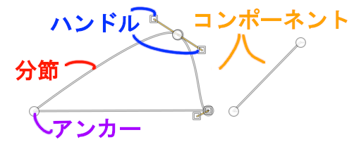
| 用語 | 意味 |
|---|---|
| アンカー | パス作成時にマウスでクリックされた各点 |
| 分節 | アンカー間の直線や曲線 |
| ハンドル | 分節を曲げるための操作用の取っ手 |
| コンポーネント | 直結されていない各パス |
Tip
GIMP のヘルプは、必ずしもパス各部の名称を定義した上で使用しているわけではありません。
またヘルプでは、一部、同じものに対して 2 通り以上の名称で呼んでいるように見える部分もあります。
例えばアンカーは、コントロールポイントや node （未翻訳部分）とも呼ばれています。
ここに紹介するパス各部の名称は、ヘルプの文脈から推測して比較的妥当だと判断したものを基にしています。
パスの編集モード
パスツールを利用して新たなパスを作成するには、左パネル上部のツールボックスから パス を選択します。
パスツールには 3 つの編集モードがあります。
- 作成
- 編集
- 移動
ツールボックスで パス が選択されている場合、下部のツールオプションで現在の編集モードを確認および変更できます。
編集モードは、ツールオプションのラジオボタンを選択することで変更できるほか、 Ctrl キーや Alt キーを押下することでも可能です。
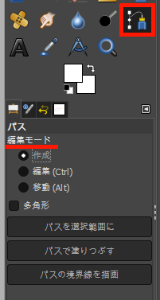
Warning
Ctrl キーや Alt キーを押下して編集モードを切り替えた場合、キーを離すと元の編集モードに戻ります。
パスの操作中は、いずれの編集モードにおいても、画像ウィンドウ下部のメッセージ欄で基本的な操作を確認できます。 メッセージ欄を確認しながら操作するとよいでしょう。
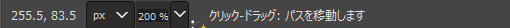
作成
パスツールのデフォルトの編集モードは 作成 です。
作成 になっていない場合、ツールボックス下部のツールオプションから変更できます。
曲線を描く
左クリックすることで、最初のアンカーを配置することができます。
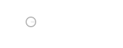
最初のアンカーを配置すると、マウスカーソルがアンカー以外の場所にのせられている場合、画像ウィンドウ下部のメッセージ欄には下記のように表示されます。
クリック-ドラッグ: 新しいアンカーを作成します (Shift もできます)
メッセージ通りに次のアンカーを配置したい場所をクリックしてからそのままドラッグすると、自動的にハンドルが引き出され、曲線を描くことができます。 曲線が思い通りの状態になったら、クリックを離します。
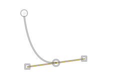
同様に次のアンカーを指定していくことで、新しい曲線をつなげていくことができます。
Tip
ハンドルを操作することで、後から曲線を調整することもできます。
直線を描く
左クリックすることで、最初のアンカーを配置します。
次のアンカーを配置したい場所をクリックして、そのまま離します。 アンカー間に直線が描かれます。
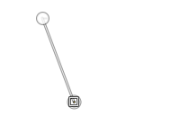
同様に次のアンカーを指定していくことで、新しい直線をつなげていくことができます。
新規コンポーネントを描く
すでにパスが描かれている場合、画像ウィンドウ下部のメッセージ欄には下記のように表示されています。
クリック-ドラッグ: 新しいアンカーを作成します (Shift もできます)
カッコ内の案内に従い Shift を押下すると、メッセージは下記のように変わります。
クリック: パスの新しいコンポーネントを作成します
そのまま次のアンカーを配置すると、そのアンカーは直前のアンカーとは連結されず、新規コンポーネントの最初のアンカーとして配置されます。
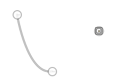
Tip
複数のコンポーネントは、それぞれ独立に移動させることができます。 ただし、パスを元にした描画は、すべてのコンポーネントで一括動作します。
パスの確認
右カラムのドック下部でタブ パス を選択すると、パスダイアログを開くことができます。
作成されたパスはここに一覧表示され、パスごとに名前を付けることもできます。
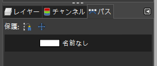
パスを作成した後で他の作業をすると、画像ウィンドウ上からはパスが消えます。 パスを作成した後は、必ずパスダイアログでパスが作成されたことを確認し、後で何のパスだったか分かるように名前を変更しておきましょう。
Warning
画像ウィンドウからパスが消えたように見えても、パスダイアログに存在するパスは、再度表示させて確認したり、再編集したりすることができます。
一覧から、再編集したいパス上で右クリックし、 パスの編集 を選択します。
これで、画像ウィンドウ上にパスが再度表示されます。
編集
ツールボックス下部のツールオプションでラジオボタンから 編集 を選択することで編集モードを 編集 に変更できます。
編集モードが 作成 の状態でキー Ctrl を押下しても、 編集 に切り替えることができます。
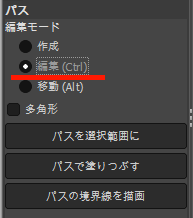
Warning
キー Ctrl 押下中のみ 編集 に切り替わり、離すと元に戻ります。
Note
ここではもっぱらキー Ctrl 押下で操作するものとします。
ツールオプションでラジオボタンから 編集 を選択した上で作業する場合は、以下の記述でキー Ctrl 押下を無視してください。
編集モードを 編集 に切り替えることで、パスを閉じたり、アンカーを削除したりすることができます。
パスを閉じる
適切に配置された 2 つ以上のアンカーがあれば、パスを閉じることができます。
Note
アンカーが 2 つの場合、分節を曲線にすると閉じた様子がよく分かります。 分節が直線の場合、分節同士が重なってしまい、閉じているのかどうかの判別が難しくなります。 以下では 3 つのアンカーで説明していきます。
下図のように 1 から 3 までアンカーを配置していった後で、最初のアンカーに戻って三角形を作るものとします。
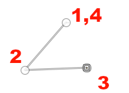
開始したアンカー上でキー Ctrl を押下すると、画像ウィンドウ下部に下記のようなメッセージが表示されます。
クリック: このアンカーと選択した拠点を接続します
最後に配置したアンカーが選択されている状態なので、 Ctrl を押下したまま開始点のアンカーをクリックすると、パスが閉じて三角形ができあがります。
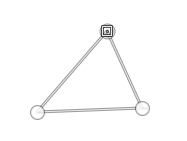
Tip
閉じていない 2 つのコンポーネントは、端点同士を接続することで 1 つのコンポーネントにすることができます。
まず、 1 つめのコンポーネントから、分節を 1 つしか持っていないアンカーをクリックして選択状態にします。
続いて 2 つめのコンポーネントから、やはり分節を 1 つしか持っていないアンカーを Ctrl を押下しながらクリックします。
これで 2 つのコンポーネントが接続されます。
Warning
1 つのアンカーは、最小で 0 、最大で 2 つの分節しか持つことができません。したがって、閉じたコンポーネント同士を接続することはできません。
パスを閉じた後で新たにアンカーを配置すると、自動的に新規コンポーネントの最初のアンカーになります。
アンカーの削除
カーソルがアンカー上にある状態で Ctrl + Shift を押下すると、画像ウィンドウ下部のメッセージが下記のように変化します。
クリック: このアンカーを削除します
メッセージにしたがってクリックすると、アンカーが削除されます。
移動
ツールボックス下部のツールオプションでラジオボタンから 移動 を選択することで編集モードを 移動 に変更できます。
編集モードが 作成 の状態でキー Alt を押下しても、 移動 に切り替えることができます。
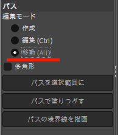
Warning
キー Alt 押下中のみ 移動 に切り替わり、離すと元に戻ります。
Note
ここではもっぱらキー Alt 押下で操作するものとします。
ツールオプションでラジオボタンから 移動 を選択した上で作業する場合は、以下の記述でキー Alt 押下を無視してください。
キー Alt を押下すると、画像ウィンドウ下部のメッセージは次のように変わります。
クリック-ドラッグ: パスを移動します (Shift もできます)
キー Alt を押下しながらパスを選択しドラッグすると、単一のコンポーネントを移動できます。
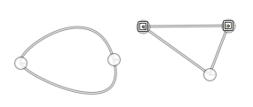
キー Alt を押下した状態で、さらにキー Shift を押下しながらパスを選択しドラッグすると、すべてのコンポーネントを一斉に移動することができます。
用語一覧
| 用語 | 英語 | 意味 |
|---|---|---|
| パスツール | paths tool | パスの編集や作成を行う |
| アンカー | anchor | パス作成時にマウスでクリックされた各点 |
| コントロールポイント | control point | おそらくアンカーに同じ |
| ノード | node | おそらくアンカーに同じ |
| 分節 | segment | アンカー間の直線や曲線 |
| ハンドル | handle | 分節を曲げるための操作用の取っ手 |
| コンポーネント | component | 直結されていない各パス |
| サブパス | subpath | コンポーネントに同じ |